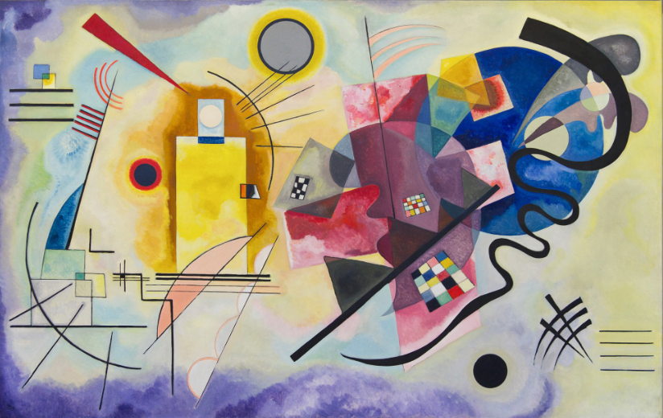
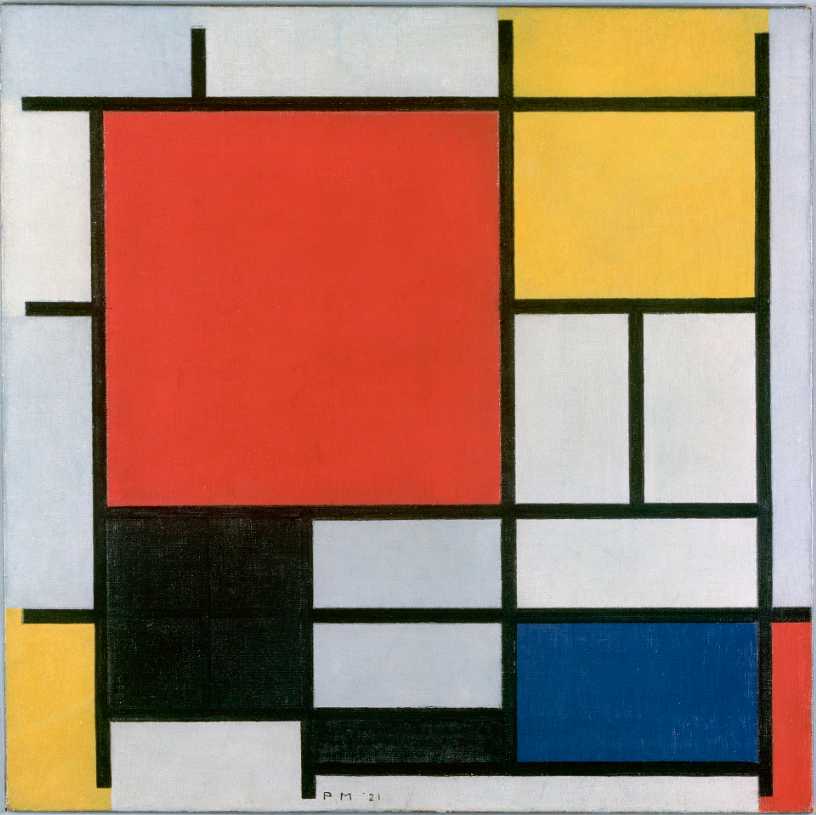

Amarillo, rojo y azul, de Wassily Kandinsky (1925)
Probablemente, la obra más importante del autor ruso durante su época en la Bauhaus. En ella, a través el color, refleja la dualidad entre el mundo exterior y el interior. La forma abstracta, para Kandinsky, permitía centrarse en los sentimientos y emociones, en lugar de enfocarse en la imagen representada de la realidad exterior.
Composition en rouge, jaune, bleu et noir, de Piet Mondrian (1921)
Mondrian, pionero del arte abstracto, busca la armonía universal a través de líneas rectas y bloques de colores primarios. El pintor vanguardista neerlandés, evolucionó hasta la abstracción, siendo uno de los máximos representantes junto a Kandinsky y Malévich.
'Friendship', de Agnes martin (1963)

Amistad es una de las tres pinturas que Martin hizo con pan de oro y yeso, materiales ricos en asociaciones históricas que se destacan en una era definida por imágenes comerciales y producción industrial.
Composition 6, de Theo Van Doesburg (1918)

Con conexión directa con Piet Mondrian, el artista neerlandés desarrolló un arte geométrico y abstracto. Fue también teórico, poeta y arquitecto.